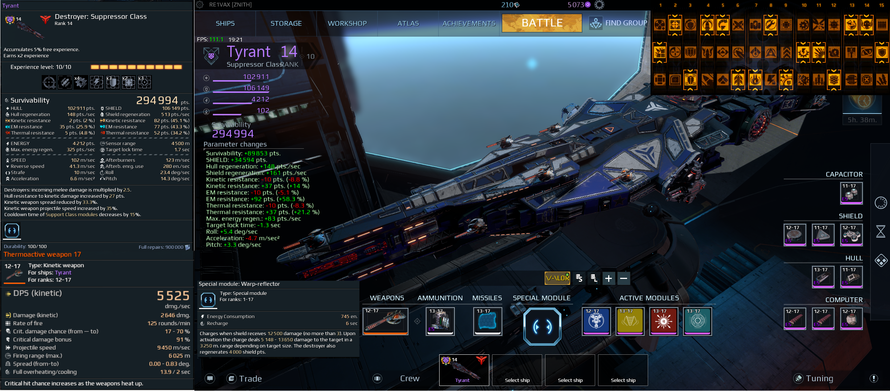

Tyrant Destroyer Advanced Guide
-TheRE1\/-\><
Overview:
This guide is a advanced tactics and strategy guide for Tyrant. It covers primarily overral build and use strategies and tactics. This can be taken as itself or as extra information for your builds, playstyles, and information.
--
-[Summary]
-Tyrant, R15 Jericho Destroyer
--
Tyrant.
A name that impresses all players from the moment they hear it to the moment they see it.
Especially in more classic Star Conflict PVP the Tyrant was a destroyer to be feared. When in the hands of those who knew and loved it like no one else, it truly played and lived up to its name -- a Tyrant.
This Jericho destroyer offers interesting gameplay abilities and tactics, rewarding skill, a tactical mind, timing, and strategy from the build, to the field.
This ship is highly technical.
Its modules, special components, Jericho buffs augment the concept that it responds very well to again, the tactical mind. To putting forth thought and effort into building and using it. Those who do so will get the most out of it.
Summary:
It is (supposed to be/often) a close ranged veritable brawler, capable (in the right hands with the right build) of taking on everything. From small agile interceptors, to being a destroyer destroyer.
A few general major points.
(Based on using its special abilities and modules).
-Destroying any enemy in a short range heals your shield
-A mine that benefits by damaging enemies in a close group at medium range.
-An onboard converter converts received damage to charges that can damage a targeted enemy in a short range while partially restoring shield.
This ends the brief summary.
--Upcoming Sections
This guide will be divided into sections.
-Personal Thoughts on builds
-Builds
Using
-General Strategies(and advanced)
-Tactics (and advanced)
-Other(?)
--
-Tyrant - Builds
--
--Forward
As stated in the summary, this is a highly technical ship platform. It allows for different types of build directions and gameplay(based on the build of course).
Even though this guide is split, build from playstyle, it is what you the player wants that makes this work. Build and playstyle of course synergize together. The goal is based from the playstyle, and enabling your playstyle is from the build. The build enables certain playstyles.
As that is, it is my opinion there are many viable different builds and playstyles to this ship.
This, of course, is where many disagree with this concept, often citing that there is the meta and only the meta. Why consider what is not meta?
[META
Most Effective Tactic(in general) Available]
Based on that concept, I could show you what the community feels is THE and thus the BEST Tyrant build. Which I will do(somewhere at the very end).
I would always take claims about a perfect meta build, especially in a ship like this, with a grain of salt.
Different goals, comfort levels, and the changing pvp landscape make the META a moving target when it comes down to per-user and per-goal and even per-situation.
-
With this in mind, I will be discussing different builds/playstyles and their advantages and disadvantages.
(Remember. Opinion. (Although a opinion based on evidence and objective(and subjective) thought and comparisons.)
Lets get into it!
--Builds
As with any R15 Destroyer, what often serves as the foundation of the build is the slots you choose from it.
In concepts, this stems from two decisions the user makes.
1. What is the main weapon?
2. Modules and Play/Build Style
Both of these support the users playstyle or goal.
So
Why like that and in that order?
Often the weapon dictates the main feel of the ship. And also it is of high importancr to make main weapon usable or comfortable, and this requires slots. A meson build would take 2 or 3 cpu slots, a good Thermo build may take just two perhaps, another may only need 1 cpu for horizon. Or you want a max close range meson dps build, so you go all iri heatsinks.
Usually then you decide the rest of the build with what is available, often because the primary weapon is of higher importance.
In actuality, both are being applied before building slots, its just often the order of logic. Any user considers (and often has in mind) what he or she wants before building slots.
--weapon build ideas
:: Thermoactive Zenith Build
Thermoactive weapon is, in my opinion, the best and perhaps the highest potential weapon for Tyrant.
The weapon, as you likely know, increases critical chance as it heats up. Maintaining a level high on the heat meter requires trigger discipline, forethought, skill, and patience (among other generalized qualities).
This is my build. It has the following advantages...
- Projectile speed to hit interceptors
- High dps
- High critical damage (correlates with dps)
- Good range.
Often the things to balance are projectile speed and crit chance/damage. I believe my build is not only objectively optimal but it is also very comfortable to me, and thus subjectively the best (for the weapon in my playstyle).
It is mainly from the following:
Crew 2:A
Crew 6:C
Crew 11:A (or B)
Two Crit Dmg Modules
Horizon Module
"Why not crew for crit dmg and replace one of the crit dmg for crit chance?"
Because projectile speed is worth it.
If I can't hit targets, it doesn’t matter if I have a million alpha damage.
I also don’t really lose much without the crit chance module, its better to use weapon correctly to maintain higher crit chance. Better reward efficient usage of Thermoactive.
You could trade proj speed for crit dmg and have <70% crit chance for 121% crit damage. Be a kickin build. (I may consider doing that and seeing if its worth it but not being able to hit certain targets.)
Remember: Higher projectile speeds help enable horizon for smaller/faster targets. The farther the distance the more dramatic the aiming offset.
Thus, I can still be accurate at longer ranges, which is more time on target, higher effectiveness, greater efficiency of time, and thus a more optimal configuration.
-calculating
--
--
--
--
-Modules
--
This is where personal preference can come more into play. Different playstyles, range builds, combinations and much more can vary.
And while the community will undoubtedly reccommend a end-all be-all 'META' build, I've had success doing things myself to my preference. Sometimes that leads to the exact same 'META' build, and sometimes its slightly different, sometimes its absolutley different. What is important is what is comfortable and what works for you. Often what you are more comfortable or are better at using can offset or even go higher than the 'META' build (if one truly exists).
[[This will be copy and pasted for the Ship Build section mind you.]]
With stated, let's get into some module ideas, strategies, concepts, and considerations.
-
-
Isotope Harvester:
I highly recommend as a must have.
"Well dur TheR."
--Strategies, Tactics, and Tips
-Can be used to get around corners
-Activate at a close object to spawn it closer to you, allowing you to damage a closer enemy (who may other wise dodge the slow moving field).
-Fire it when you see trouble coming.
-Fire it leading a target, such as a destroyer, so that by the time the field gets in distance range it will hit the enemy craft.
-It is quite effective vs destroyers.
They added a 1.25 total multiplier.
Why?, idk, but it has that so its even more OP.
This module is your primary lifeline of shield (at least in my build and in my opinion).
Use it wisely. A wise use can potentially heal half of your shield instantly. Using it effectively is what will enable you to outlast even a number of powerful enemies.
--Multiphase Shield Generator
I highly recommend as a must have.
"Again. Dur theR."
-Strategies Tactics and Tips
I know it is obvious. This is very important for all Jericho Destroyers and greatly increases your shield resistance. Shield resistances is essentially both the efficiency and effectivness of your shield.
As I will discuss later, Tyrant is geared towards regeneration in modules, which means you should focus on resistance and capacity for the build (and in general.)
(You should go for all of those in general, this is nothing new.)
It is a active module. And please understand.
Correct and wise usage of this module can be the difference between losing >50-80% of your shield, to your enemy wondering if their hits even registered.
Don’t waste it.
Either by using it too much or too little.
It also counts as a multipurpose module, so it is helpful for clearing debuffs.(This becomes more relevant with my playstyle.)
-Photon Emitter
Cited as a 'must have' for all destroyers by the community.
Nowadays, considering the pvp scene, I also tend to agree with them. It is certainly useful in a variety of situations, especially as the common meta is destroyers.
It also has a unique synergy with Tyrant. You can fire it at a nearby object and damage yourself, which will charge your special module.
It also is a very effective module vs other destroyers, allowing this build to be more of a potential dessie killer.
-[Fourth Slot]
Some prefer wormhole, other prefer gravitational-lens, others prefer repelling beam. Tempest is meh, and most people think pyro is meh.
Wormhole: helpful for getting in and out of combat, helpful when getting swarmed by ships, or the sneak-attacking covert ops. Does some damage projectile as well.
Repelling Beam:
I personally like Repelling beam, because it keeps them at just the right range for my primaries. (has other uses also).
Pyro:
Another choice I liked for a while. it is surprisingly effective at orbiting inties and at medium ranges vs fighters. Close range against enemy dessies also can work rather well.
-
Missile slot
Shields, hull heal, or repelling drone.
Many pro players swear by repelling beam, and as far as I am concerned is described as the meta (although it varies per ship). Is overpowered (especially when it was untargetable and therefore hard to disable).
Shields:
My personal favorite. Allows to soak up damage, make players flank you, among other uses. This is what I use and I recommend.
--
--
--
here we go.
--
-Playstyle
--
How this works:
I am going to describe some playstyle concepts and styles that Tyrant favors, and then my in-depth playstyle(s).
--
--
General Concepts(as an opinion).
to a degreee, strategizing placement is essential to staying alive. reading the map and making choices. Often deciding between where to apply damage, and what will also not put you in a sitatuon where you cant run and you wont live.
-Tyrant Favor
Tyrant favors close-mid range fighting. In this concept, rotation speed, accel, and top speed (in order of importance) help to make this strategy effective. Moving around enemy dessies, keeping Spec Mod active, and picking right time for your modules while spec passive steals from those destroyed in close range to you...
all while battering them with Thermo-Active.
Close on offense, far on defense.
It also can become quite a handful to do all thing at once.
--my playstyle
It essentially what I have already talked about.
Close on offense, far on defense. I typically try and circle the border between teams, around the left and right sides of the typical map. Staying relatively close to allies also helps.
Also, always and I mean always moving. this helps mitigate cov ops and such stalking you. And adaptive shields.
When it comes to fighting dessies, you have to either commit or toe the line to not get drained to death. Albireo has infinite lives, you do not. 3 dessies vs you at long range at sustained time = most likely death.
You need to be close to get around shields, use spec mod, and spec active mod, and also spec passive mod.
Pounding with thermo at close range is when it gets effective.
And since this build is combat regen based, you need combat. My relic build is long range high regen. (among other things).
It is certainly a hands-on ship.
--
--
--
This completes the main guide.
Tyrant may yet still have a place in this game (albiet in niche situations), but when it does it is both effective and thoroughly enjoyable.
Hopefully this guide was either mildly informative or mildly entertaining. Thank you for reading to this point.
--
--
--
About-Me:
Im TheRE1VAX.
Qualifications for making this guide:
If you need qualifications at this point for this guide, chances are--anything I tell or show you won't be enough.
Qualifications?
-A long time player
-Has evidence that I think and consider things in a extremely thorough manner
-Has Tyrant
-Has played Tyrant
-Has contributed to the community already
-Has contributed builds on Tyrant to the community
-This document
--
-Several videos playing rather well on Tyrant in pub pvp ungrouped uploaded in my YT channel.